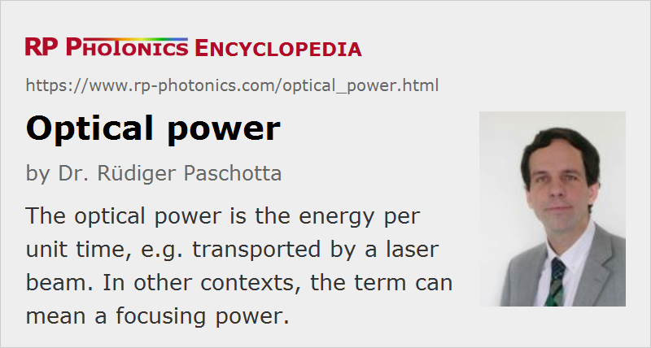

Optical Power
Definition: the energy per unit time, e.g. transported by a laser beam, or a focusing power
Alternative terms: radiant power, focusing power
More specific term: peak power
German: optische Leistung
Categories: general optics, light detection and characterization
Formula symbol: P (for energy per time), 1 / f (for focusing power)
How to cite the article; suggest additional literature
Author: Dr. Rüdiger Paschotta
The term optical power occurs in the literature with two totally different meanings:
- It can be the energy of light per unit time, as is delivered by a laser beam, for example.
- It can be a focusing power, also called dioptric power, for example of a lens or microscope objective.
In the following, both meanings are discussed.
Power as Energy per Time
A power with that meaning is usually specified in watts = joules per second. Particularly in the area of optical fiber communications, optical powers are also often specified in dBm, which means decibels relative to the reference power 1 mW. For example, a power of 10 μW = 0.01 mW corresponds to −20 dBm (= 20 dB less than 1 mW).
In radiometry, one uses the term radiant flux (or radiant power), which may be considered as more general, since it can be applied not only to light.
Optical powers of laser beams are often measured with so-called optical power meters. Some of these devices can handle multiple kilowatts of laser power from a high-power laser; they are usually water-cooled. Other power meters, often based on photodiodes, can be used for measuring very low optical powers of microwatts, nanowatts or even less. Optical power monitors are widely used as permanent parts of optical systems, e.g. in optical fiber communications.
The optical power of light which is radiated in a wide range of directions cannot easily be measured with a power meter, as it is difficult to collect it. In such cases, an integrating sphere can be used.
Note that the optical power of some source may be spread over a substantial frequency or wavelength range. As the responsivity of a photodetector (e.g., a photodiode) maybe frequency-dependent, one may then not easily obtain a correct measurement of the total optical power.
The power of an optical pulse varies with time (for ultrashort pulses, within femtoseconds); its maximum is called the peak power. The peak power can be estimated from the pulse energy and pulse duration. Particularly for a regular pulse train with a high pulse repetition rate, one often specifies the average power. When such the pulse train is sent into a power meter with a low temporal resolution, that device will often just display the average power.
Even for a continuous-wave laser, the output power is not perfectly constant, but exhibits some level of intensity noise. (The better term would actually be power noise, but this not common.) See also the article on relative intensity noise.
From the power of a laser beam, one can estimate the maximum optical intensity (power per area) within its transverse profile, if the shape and width of that profile are known. On the other hand, the total optical power of a beam is the integral of its intensity over the full beam area.
Focusing Power
For this meaning, it is recommended to use a term like focusing power, dioptric power or refractive power rather than optical power in order to avoid the possible confusion with the energy per unit time (see above). Qualitatively, what is meant is the ability of an optical element (for example, a lens or a microscope objective, which is a combination of several lenses) to focus light. Quantitatively, the focusing power is the reciprocal of the focal length of the device, and its units are inverse meters (m−1), also called diopters (dpt). The article on focal length contains many more details.
Questions and Comments from Users
Here you can submit questions and comments. As far as they get accepted by the author, they will appear above this paragraph together with the author’s answer. The author will decide on acceptance based on certain criteria. Essentially, the issue must be of sufficiently broad interest.
Please do not enter personal data here; we would otherwise delete it soon. (See also our privacy declaration.) If you wish to receive personal feedback or consultancy from the author, please contact him e.g. via e-mail.
By submitting the information, you give your consent to the potential publication of your inputs on our website according to our rules. (If you later retract your consent, we will delete those inputs.) As your inputs are first reviewed by the author, they may be published with some delay.
See also: radiant flux, optical intensity, brightness, intensity noise, peak power, optical power meters, optical power monitors, high-power lasers, dioptric power
and other articles in the categories general optics, light detection and characterization
|  |
If you like this page, please share the link with your friends and colleagues, e.g. via social media: 


These sharing buttons are implemented in a privacy-friendly way! |
2020-06-14
Total optical power if I have three different wavelength components with −10 dBm, −12 +dBm and −5 dBm?
Answer from the author:
You have to convert all those to optical power values and add up those; here: 100 μW + 63 μW + 316 μW = 479 μW, which corresponds to −3.2 dBm. See the article on dBm.